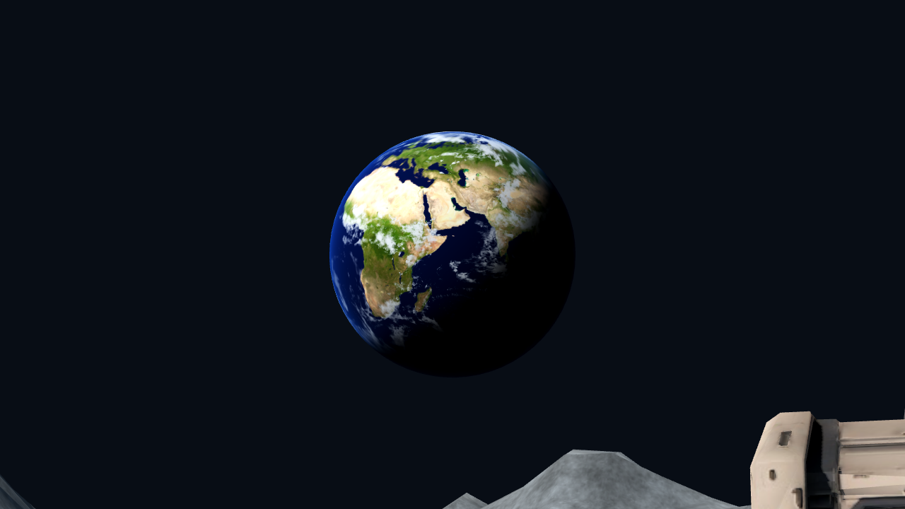
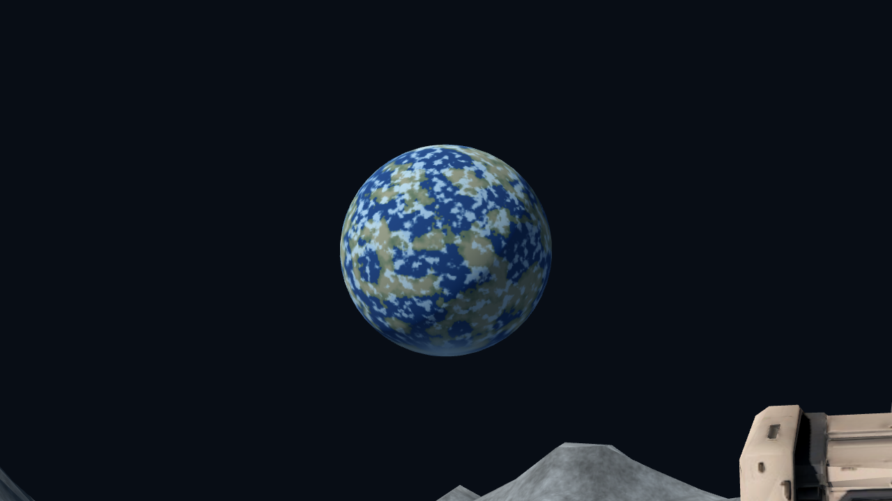

SPACE / REVIEW E / 2026-11-14 · Godot 实际渲染
枪械、HUD 与地球
改造前基线为 a820da7。主视角、场景布局、相机视野及分辨率一致；只改变本轮三项及持枪姿态。截图用测试状态固定为 00:42 / 08，便于对照，不是生成图。枪械的持握位置属于本轮调整内容。
主视角：改造前后
枪身从长顶轨和大块外壳，改为分离装甲、短瞄具座、侧置三组能量线圈、短护木、独立弹匣与更明确的机械连接。白漆、石墨、金属和橙色标记分开处理。敌人仍使用已批准的四红点头部与原有武器。
开镜：比例与遮挡
持枪姿态向右下收拢，开镜时回到精确瞄准轴；游戏枪口标定不变。检查同时覆盖资源声明的轴线和实际模型 Reticle 的投影，均小于 0.001 像素；保留实际射击爆头与弹匣运动回归。
HUD：按概念图组织，按实际规则显示
顶部时间、橙色分隔和击杀数字重新调整比例、边距与暗色描边。右下改成五枚矢量弹头、准确发数与后备弹药符号。每枚弹头表示四发容量，部分填充表示剩余比例；数字提供精确读数。后备弹药无限，因此显示绘制的无限符号，没有伪造 24/120，也没有改变 20 发弹匣规则。手雷库存和触控功能继续保留。
地球：固定 12° 视野的实机检查


改造前的地球来自基线地图中的原始噪声球；改造后使用 NASA Blue Marble 全球地表与云层合成图。两者均由实际场景渲染，12° 视野只用于放大检查；正常游戏仍使用原视野。可以辨认非洲、欧洲、海洋、云带和昼夜边界。
地球使用一个不透明球体、两张带 mipmap 的贴图，薄蓝色边缘在同一着色器中近似表现；没有新增实时灯、透明云球、实时气象或额外场景渲染。太阳方向来自地图主光，观察朝向为艺术构图选择，不对应真实日期的天象。
素材：NASA SVS Blue Marble、NASA Blue Marble 地表与云层说明。图像来源致谢 NASA Goddard Space Flight Center、Reto Stöckli、Robert Simmon 及相关科学团队。完整来源与使用说明随 Web 包附带；不使用 NASA 标志或暗示背书。
功能与开销记录
原生导入、导航、实际坡道、规则、主视角状态、ADS/实际 Reticle、换弹与真实爆头通过；原入口瞄准回归通过。Chrome 实际 Web 完整回合与触控模拟通过。物理手机与人工手感评审尚未进行。
PCK 为 74.84 MiB。采样时没有截图读回，数据为帧间隔而非 GPU 时间。原生表格使用预热后样本；起始阶段另有 146.73 ms、69.84 ms 长帧，已在长帧记录中保留。没有完成三轮固定种子的系统性优化，不能据单轮结果宣称卡顿已解决。长帧记录 · 验证摘要 · 包体审计 · Web 原始数据
与原概念图对照
 原概念图，仅供美术方向比较，不是实机。
原概念图，仅供美术方向比较，不是实机。
本轮交付的是三项专项实装与对比，视觉是否达到你的预期仍待评审。实机枪械仍偏低模，手部动作和磨损密度可以继续精修；全图构图、月面、工业装配细节和性能专项没有在这一轮全部完成。基地室内、敌人行为和射击数值未变。
制作源与复现方式 · 本机 Web 预览（需本地服务）